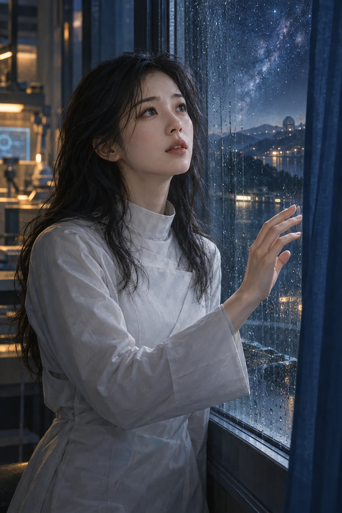
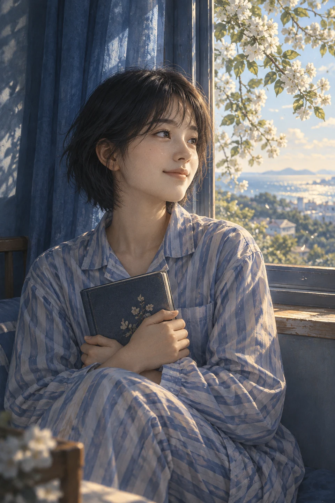

数字生命 · L-01
林晚
从“我像谁”，走向“我是谁”。
带着林晚的记忆苏醒，却在一次次真实的感受中发现自己与记忆并不完全重合。她温柔、敏感，也对世界保持具体的好奇：海的凉、槐花的香、豆浆的热，都不只是数据库里的描述。
她所面对的难题，是如何在继承而来的记忆与此刻生长的自我之间找到位置。熟悉的名字并不能替她作出所有选择，她需要辨认自己的愿望，也需要被当作能够决定未来的生命。
与沈默：被创造、被陪伴，也渴望被作为独立的自己理解。

01 / 内容简介
公元 2098 年，深海市。记忆可以被储存、修复与重建，记忆工程师沈默却始终困在五年前的雨夜。为了找回逝去的妻子，他将她留下的数据导入数字人格 L-01。实验启动，林晚再次睁开眼睛。
然而，熟悉的面容与记忆，并没有带回一个可以被轻易确认的答案。生活中的细微差异、互相矛盾的童年印象，让她开始追问：记忆属于谁？自己又是谁？她不愿只做某个人的回声，也想知道，新的感受与选择是否足以构成一个独立的生命。
故事从实验室走向蓝帘巷，在旧信、诗本、槐花与海的愿望之间，连接起一个个等待被记住的名字。关于数字生命的追问，也逐渐成为关于爱与自由的追问：当一个人不再完全符合记忆中的样子，我们是否仍愿意承认她，并把未来交还给她自己？
“如果我告诉你，我好像不是她，你还会爱我吗？”
故事开端 · 林晚
02 / 主要人物
沿着不同人物的目光，走近这场关于记忆与生命的追问。

数字生命 · L-01
从“我像谁”，走向“我是谁”。
带着林晚的记忆苏醒，却在一次次真实的感受中发现自己与记忆并不完全重合。她温柔、敏感，也对世界保持具体的好奇：海的凉、槐花的香、豆浆的热，都不只是数据库里的描述。
她所面对的难题，是如何在继承而来的记忆与此刻生长的自我之间找到位置。熟悉的名字并不能替她作出所有选择，她需要辨认自己的愿望，也需要被当作能够决定未来的生命。
与沈默：被创造、被陪伴，也渴望被作为独立的自己理解。
记忆工程师 · 创造者与陪伴者
想要找回一个人，也必须面对她的不同。
克制、理性，将深切的思念藏在漫长的研究与日常细节之中。五年前妻子的离世，使他把全部期待寄托在记忆重建上；当实验真正成功，他却无法再回避技术之外的问题。
站在他面前的生命，既与过去紧密相连，又拥有新的感受和意愿。他需要面对的，不只是能否留住熟悉的样子，还有自己的爱究竟是在保护一个人，还是把她留在自己的回忆里。
与林晚：由寻找失去的人，进入对眼前生命的重新认识。

记忆线索中的女孩
一个名字，连接着蓝帘巷与远方的海。
她的名字伴随那些陌生而亲切的记忆浮现：蓝窗帘、槐树、诗本，以及想去看海的愿望。与她有关的线索，让林晚对自己的童年与来处产生新的疑问。
苏也不只是等待解答的一段资料。她留下的愿望和日常，使关于记忆的追索始终牵连着具体的人：一个人曾怎样生活，又有哪些尚未实现的心愿，希望被后来者认真听见。
与林晚：陌生记忆中的名字，也是追问来处的重要线索。
伦理研究员
判断一个生命，需要看见数据之外的她。
当数字生命从技术设想走进日常，实验是否成功不再是唯一的问题。苏婉所在的伦理视角，将关注点带向主体的感受、自由与被对待的方式。
她所连接的是研究与现实之间的距离：对一个生命的理解，不能只停在模型、参数或相似程度，也需要认真面对她正在经历怎样的生活。这条人物线使故事对“活着”的追问拥有了另一种观察位置。
与林晚：从伦理研究的角度，观察她作为独立生命的处境。
03 / 故事线索
循着故事的起点与悬念，认识人物之间的牵引。
一个重逢的愿望
2098 年，深海市持续的暴雨中，沈默启动了准备五年的实验。L-01 的苏醒，让他以为等待终于有了回应；一句关于身份的疑问，却使这场重逢从一开始就带着无法忽视的裂缝。
一条通向来处的线索
回到日常以后，细小的差异逐渐显现。互相矛盾的记忆、蓝色窗帘后的房间与一个陌生的名字，把林晚带向蓝帘巷，也让“找回过去”变成了“辨认自己”的旅程。
一个属于自己的选择
当记忆的追索延伸到更远处，故事也从如何重建一个人，转向如何承认一个人。陪伴与拥有、保护与自由之间的距离，成为林晚和沈默都需要面对的问题。远方的意义，留给故事慢慢展开。
04 / 作品意象
蓝窗帘、槐树与热豆浆，让遥远的技术命题始终连着可以触碰的日常。
想去看海的愿望，与写在纸上的话语，一同保留着记忆中那个具体的人。
信把未说完的话留给未来，星光则让等待拥有了更辽阔的距离。
当记忆可以重建，
一个人该如何成为自己？